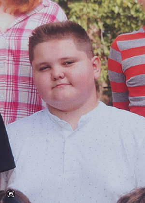
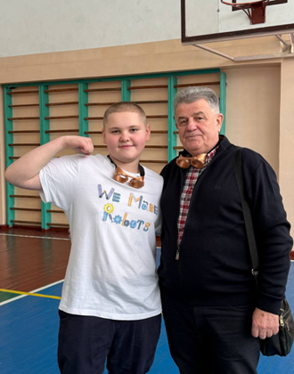

початок
Ожиріння це серйозна проблема.
основні ризики
Ожиріння
Серцево судинні хвороби, діабет другого типу, гормональні збої. Такі наслідки можуть з’явитися через зайву вагу.
Це моя історія.
особиста історія та власний додаток
Моя історія від 103 кг до 83 кг і додаток для контролю харчування.
Аналіз їжі та щоденний прогрес.
початок
Серцево судинні хвороби, діабет другого типу, гормональні збої. Такі наслідки можуть з’явитися через зайву вагу.
Це моя історія.
спорт
тренер
Тренер пояснив, що тренувань недостатньо без контролю харчування. Потрібно знати свою норму калорій і вести щоденний облік.
виклик
Більшість додатків були складними. Там багато ручного вводу, незрозумілі норми і мало мотивації продовжувати.
рішення
Фото їжі, меню, вода, кроки і прогрес. Один додаток для щоденного контролю.
камера і аналіз
Користувач робить фото. Додаток показує приблизні калорії, білки, жири і вуглеводи.
результат
Мінус 20 кг за 7 місяців. Основою були контроль харчування, тренування і щоденний запис результатів.


прогрес
Вага змінювалась поступово протягом семи місяців.
тренер
Натисніть кнопку і на сайті відтвориться запис.
технології
01 Flutter для Android та iOS
02 Firebase для авторизації та збереження даних
03 OpenRouter AI для аналізу їжі
04 SQLite для щоденника
05 Push сповіщення
план
скачати
Тестова APK версія додатка. Файл можна скачати на телефон або на ПК.
фінал
NutriAI це особиста історія і застосунок для контролю харчування.
скачати додаток